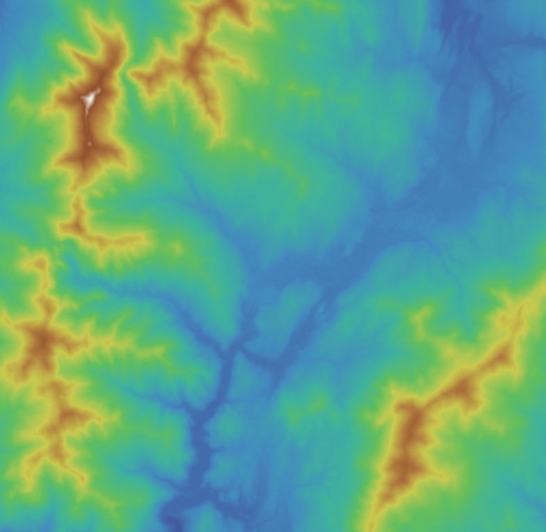

三维地形模型
▾
数据源：
elevation.tif
（DEM）
高程范围：
像元分辨率：30 m ｜ 色带随高程渐变
色带方案
地形色带
灰度晕渲
光谱色带
等高线
关闭
50 m
100 m
250 m
500 m
垂直夸张
1.2×
太阳方位角
315°
太阳高度角
45°
自动旋转
光照晕渲
复位视角
水流分析
▾
在地形上点击，查询该点高程
— m
标点工具（新点替换旧点）
水流路径（D8 法）
对DEM数据进行填洼处理
操作提示
▾
左键拖动
旋转视角
滚轮
缩放远近
右键拖动
平移画面
平面图对照
▾
▲北

同一区域平面图（俯视）
正在加载 DEM 数据…